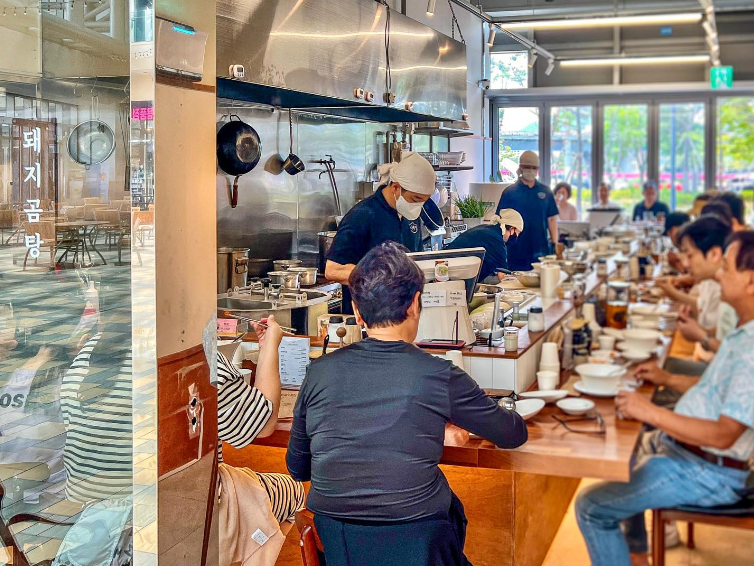

Our Story
私たちは良い食べ物が良い人生を作ると信じています.
新鮮で良質な食材を使って正直に料理し、ひとつの料理があなたを幸せにすることを願っています。うまくできることは重要ではありません。多くの心を込めることが大切です.
釜山の伝統豚骨スープ
ミシュランガイド選定店で
釜山の伝統的な味をお楽しみください
나막집のシグネチャーメニュー

野菜出汁に昆布と煮干しを加えて煮出し、豚骨出汁をブレンドして作ったナマクチブシグネチャースープに、低温熟成した豚肩肉を薄く切ってのせたメニュー

豚骨スープにご飯の代わりに韓国の伝統的な麺であるカルグクスを使用し、低温熟成した豚の前脚肉を薄く切ってのせたメニュー

豚肉のさまざまな部位から高品質な部位を使用し、毎日新鮮な状態で茹でることを原則としたメニューです
私たちは良い食べ物が良い人生を作ると信じています.
新鮮で良質な食材を使って正直に料理し、ひとつの料理があなたを幸せにすることを願っています。うまくできることは重要ではありません。多くの心を込めることが大切です.
나막집のニュース
私たちの店「나막집」がミシュランガイドに選ばれましたことをお知らせいたします. 나막집を愛し、応援してくださるすべてのお客様に心から感謝申し上げます。今後もより良い味とサービスを提供いたしますので、どうぞよろしくお願いいたします。ありがとうございます
"釜山は豚クッパの都市らしく、クッパのスタイルも多様だ。 豚クッパ固有の味は維持しながらも、店ごとにスープの出し方を少しずつ変えている点が特徴だ。 木屋は肉の出汁で野菜の割合を高め、濃厚な味よりは軽くてさっぱりしたスープの味が楽しめる。 メインメニューの豚クッパのほか、クッパスープを使った肉カルグクスや生麺カルグクス、ゆで肉やサムギョプサル焼きなどの付帯メニューも選択できる。 モダンな感じの空間で後味がさっぱりした豚クッパを楽しむのに最適だ。"- ミシュランガイド
나막집を訪ねてください
부산 남구 분포로 145 . 스퀘어동 1층 1068호
부산 수영구 민락수변로17번길 36 . 타워더모스트 광안 101호
0507-1383-4882
毎日:11:30 - 20:30
ブレイクタイム: 15:00 - 17:00
地図エリア